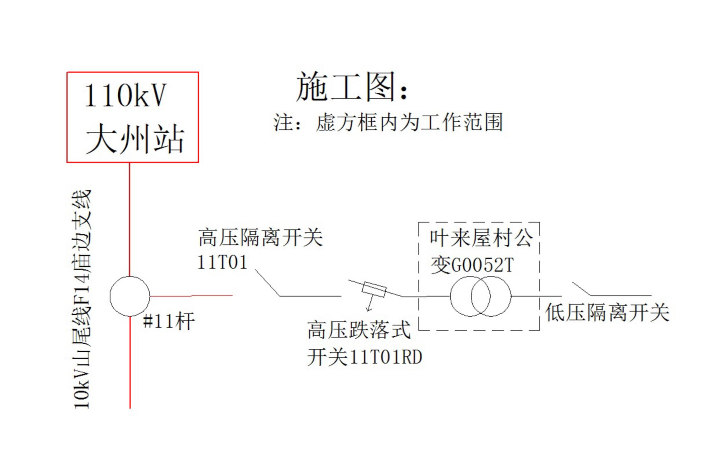

电力工程安全规程考试刷题系统
案例25
案例1
案例2
案例3
案例4
案例5
案例6
案例7
案例8
案例9
案例10
案例11
案例12
案例13
案例14
案例15
案例16
案例17
案例18
案例19
案例20
案例21
案例22
案例23
案例24
案例25
案例26
案例27
案例28
案例29
案例30
返回首页
案例背景
申请单位：XX电力工程公司（2）停电设备：110kV大州站10kV山尾线F14庙边支线#11杆叶来屋村公变G0052T，作业地点临近路边。（3）工作内容：更换110kV大州站10kV山尾线F14庙边支线#11杆叶来屋村公变G0052T。（4）申请停电时间：2019年9月27日7：30-19：00（5）批准工作时间：2019年9月27日8：00-18：00（6）XX电力工程公司XX班组工作负责人张三带领工作班成员王五、赵六、钱七、陈八开展此项工作，李四为工作票签发人。
电气主接线图

1
多选题
题目内容加载中...
上一题
提交答案
下一题
答题统计
当前进度：
0/15
已答题目：
0
正确率：
0%
得分：
0
最终得分:
0
/15
题目导航